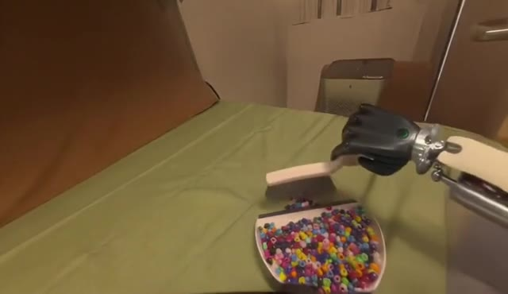
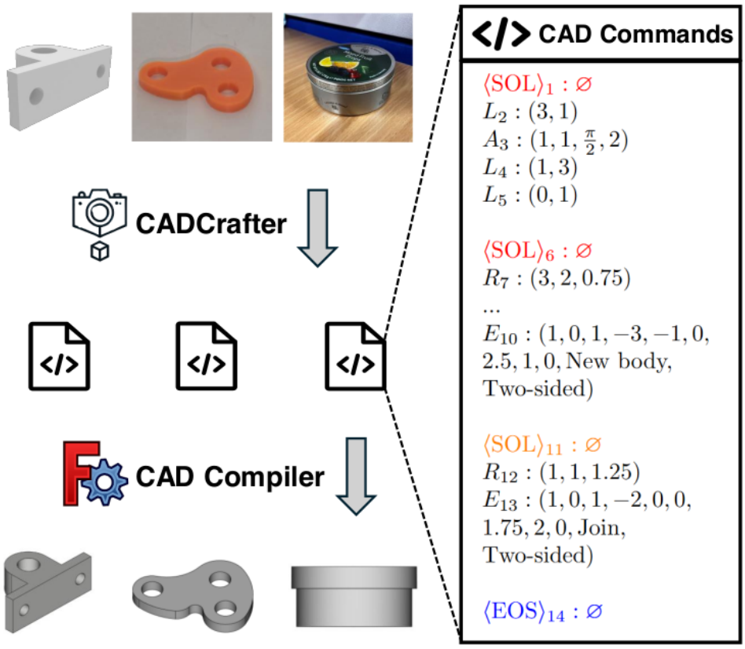
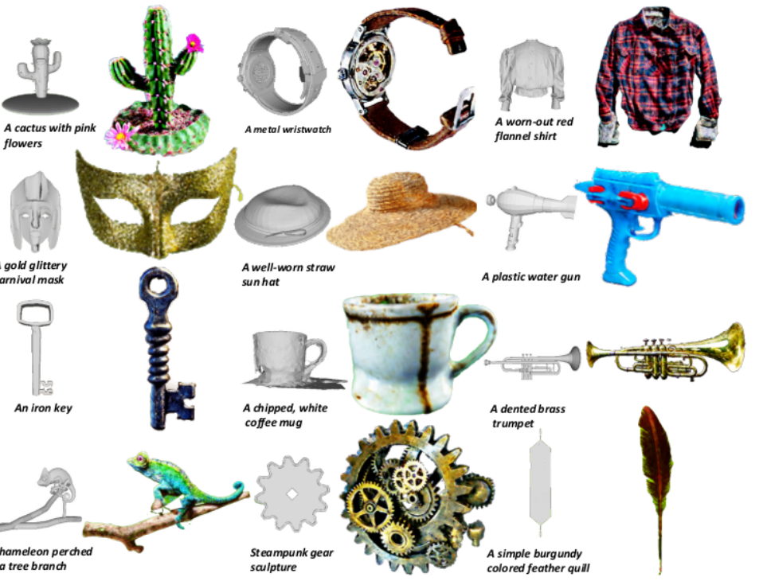

|
Cheng Chen I am a Ph.D. candidate in Computer Science at Nanyang Technological University, advised by Prof. Guosheng Lin and Dr. Fayao Liu. I study how foundation models learn to act and adapt through interaction, with a focus on embodied AI. In parallel, I develop controllable video generation models for interactive digital worlds and robot learning. Previously, I interned at XPENG Robotics and Ant Group. I am actively seeking opportunities in both industry and academia. I expect to complete my Ph.D. in late 2026. Email / CV / Google Scholar |
|
News2026 We released XPACE, a joint world and action model learned from heterogeneous experience.
2026 AnyWorld was accepted to CoRL 2026.
2026 We released DiVA, an interactive digital-life simulator built with video models.
2026 SwiftVLA was accepted to CVPR 2026.
2025 CADCrafter was accepted to CVPR 2025.
2025 Text-to-Image Rectified Flow as Plug-and-Play Priors was accepted to ICLR 2025.
|
ResearchI study how foundation models turn general knowledge into reliable action. My current work in embodied AI investigates how demonstrations and action–outcome feedback help agents understand unfamiliar robots, and whether task skills and embodiment knowledge can be acquired separately and recombined. In parallel, I develop controllable video generation and world models for sustained interaction with digital characters, joint video–action prediction, and transferring human experience into robot training data. My earlier work includes text-to-3D generation and recovering editable CAD models from images. |
|
XPACE: Joint World and Action Modeling from Heterogeneous Experience
Jiacheng Wei, Jerry Bai, Xiaoyu Yue, Zidong Wang, Xiaoyang Guo, Cheng Chen, Fanqi Pu, Fan Wu, et al. Technical report, 2026 project page / arXiv Joint world and action modeling from human and robot experience, with simulation-generated recovery data for policy improvement. |
|
 View demo ↗ |
AnyWorld: Factorized Egocentric World Models for Cross-Embodiment Generalization
Cheng Chen, Jerry Bai, Jiacheng Wei, Boyu Chen, Xiaoji Zheng, Fan Wu, Minghao Yang, Tianrun Chen, Ruibo Li, Xiaoyu Yue, Xiao-Yang Guo, Yixiao Ge, Guosheng Lin, Fayao Liu Conference on Robot Learning (CoRL), 2026 project page / arXiv Recomposing unpaired human interaction into robot-native experience across embodiments, viewpoints, and scenes. |
|
DiVA: Enabling Interactive Digital Life Simulation via Video Models
Cheng Chen, Hao Ouyang, Qiuyu Wang, Ka Leong Cheng, Wen Wang, Yihao Meng, Hanlin Wang, Yixuan Li, et al. International Journal of Computer Vision (IJCV), under review, 2026 project page / arXiv A stateful video-generation system for long-running interactive character worlds with stable multi-turn behavior. |
|
|
SwiftVLA: Unlocking Spatiotemporal Dynamics for Lightweight VLA Models at Minimal Overhead
Chaojun Ni*, Cheng Chen*, Xiaofeng Wang*, Zheng Zhu*, Wenzhao Zheng, Boyuan Wang, Tianrun Chen, et al. IEEE/CVF Conference on Computer Vision and Pattern Recognition (CVPR), 2026 project page / arXiv A lightweight vision-language-action model with explicit spatiotemporal dynamics for efficient robot deployment. |
|
 |
CADCrafter: Generating Computer-Aided Design Models from Unconstrained Images
Cheng Chen, Jiacheng Wei, Tianrun Chen, Chi Zhang, Xiaofeng Yang, Shangzhan Zhang, Bingchen Yang, Chuan-Sheng Foo, Guosheng Lin, Qixing Huang, Fayao Liu IEEE/CVF Conference on Computer Vision and Pattern Recognition (CVPR), 2025 arXiv Recovering editable parametric CAD programs from unconstrained images. |
|
Text-to-Image Rectified Flow as Plug-and-Play Priors
Xiaofeng Yang, Cheng Chen, Xulei Yang, Fayao Liu, Guosheng Lin International Conference on Learning Representations (ICLR), 2025 paper / code Using text-to-image rectified-flow models as flexible optimization priors for downstream visual generation. |
|
 View demo ↗ |
Sculpt3D: Multi-View Consistent Text-to-3D Generation with Sparse 3D Prior
Cheng Chen, Xiaofeng Yang, Fan Yang, Chengzeng Feng, Zhoujie Fu, Chuan-Sheng Foo, Guosheng Lin, Fayao Liu IEEE/CVF Conference on Computer Vision and Pattern Recognition (CVPR), 2024 project page / arXiv Injecting sparse 3D priors into text-to-3D generation to improve geometry and multi-view consistency. |
|
Learn to Optimize Denoising Scores: A Unified and Improved Diffusion Prior for 3D Generation
Xiaofeng Yang, Yiwen Chen, Cheng Chen, Chi Zhang, Yi Xu, Xulei Yang, Fayao Liu, Guosheng Lin European Conference on Computer Vision (ECCV), 2024 project page / arXiv / code A learnable diffusion prior that improves score-distillation-based 3D generation in a unified formulation. |


|
For the complete list, please see my Google Scholar. |
VisitorsLoading globe… |